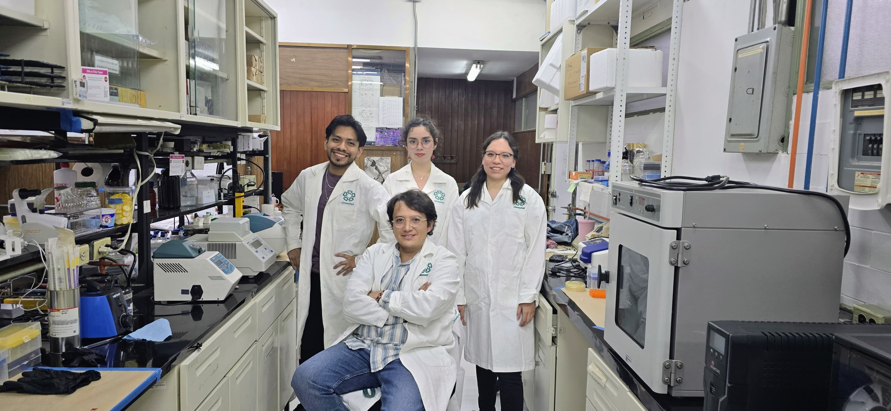

Discriminación entre ARN propio y no propio
Mecanismos moleculares mediante los que el sistema inmunológico reconoce ARN endógeno y exógeno.
Cinvestav · Departamento de Genética y Biología Molecular

Fotografía del investigador
Coloca rodolfo-avila.jpg junto al HTML.
Realizó una estancia como Investigador Postdoctoral Asociado en el Institute of Immunology and Infection de la Universidad de Edimburgo, Reino Unido, y posteriormente fue investigador postdoctoral en el Instituto Politécnico Nacional (IPN). Obtuvo el Doctorado en Ciencias en Biotecnología y la Maestría en Ciencias en Biomedicina Molecular por el IPN, ambos con la distinción Cum Laude. Actualmente dirige el Laboratorio de Genómica y Biología Molecular del ARN en el Departamento de Genética y Biología Molecular del Cinvestav, en Ciudad de México. Su investigación busca comprender cómo se discriminan los ARN propios y no propios y cómo esta regulación influye en la activación de la inmunidad innata.
Equipo de investigación
El investigador responsable identificado en este sitio es el Dr. Rodolfo Gamaliel Ávila Bonilla. [COMPLETAR: estudiantes, investigadores posdoctorales y colaboradores, con autorización para publicar sus perfiles]
Estudiamos cómo las modificaciones postranscripcionales del ARN influyen en su reconocimiento y unión por proteínas celulares.
Pregunta central: ¿cómo modifican las marcas del ARN su interacción con proteínas celulares? Enfoque: aproximaciones experimentales y bioinformáticas mencionadas en el sitio.
Analizamos cómo las proteínas de unión a ARN participan en la detección de virus de ARN y en la activación de la respuesta inmunitaria innata.
Pregunta central: ¿cómo contribuyen las proteínas de unión a ARN al reconocimiento de virus de ARN y a la respuesta innata?
Caracterizamos muestras y complejos moleculares mediante proteómica, espectrometría de masas, secuenciación Nanopore y microscopía confocal para visualizar interacciones.
Pregunta central: ¿qué mecanismos regulan la expresión y función de ARN en los sistemas estudiados? Los vínculos con proyectos y publicaciones específicos están por documentar.
Procesamos datos en clústeres HPC y desarrollamos análisis con aprendizaje profundo, edición CRISPR-Cas y flujos de dinámica y docking molecular para apoyar el diseño de fármacos.
Enfoque: análisis computacional como complemento de la investigación experimental; los proyectos asociados deben confirmarse.
Estos temas describen el enfoque científico del laboratorio y no se presentan como proyectos independientes confirmados.
Mecanismos moleculares mediante los que el sistema inmunológico reconoce ARN endógeno y exógeno.
Implicaciones transcripcionales de los ncRNAs y su influencia en la respuesta inmunitaria innata.
Efecto de las RBPs en la regulación y activación de la inmunidad innata.
Genómica · Células pluripotentes
Proteómica · CAPAM
ARN vault · Cáncer
Virología · Meta-transcriptómica
No hay proyectos que coincidan con estos filtros.
Referencias bibliográficas pendientes de validar
El contenido disponible en esta página no incluye autores, revista, año ni DOI completos. Los cuatro títulos en inglés se conservan en proyectos, donde estaban publicados originalmente; no se presentan aquí como artículos confirmados.
[COMPLETAR: título, autores, revista, año, DOI o enlace editorial, resumen y temas de cada publicación verificada]
ARN · expresión génica · genómica
RNA-Seq y secuenciación de lectura larga con Oxford Nanopore.
Biología molecular · bioquímica
Caracterización proteómica y análisis por espectrometría de masas.
Biología celular · análisis molecular
Visualización y estudio de interacciones moleculares en células.
Biología molecular · análisis funcional
Perturbación y análisis funcional de genes y elementos reguladores.
Bioinformática · análisis de datos
Procesamiento de datos y flujos reproducibles en cómputo de alto rendimiento.
Bioinformática · análisis de datos
Modelos para integrar datos y explorar patrones en sistemas biológicos.
Métodos computacionales · modelado
Simulación de sistemas biomoleculares y análisis de sus interacciones.
Métodos computacionales · modelado
Evaluación computacional de interacciones para apoyar el diseño de fármacos.
Cultivo celular · virología
No se detallan técnicas concretas de cultivo celular o virología experimental en el contenido disponible.
Recursos computacionales
El sitio menciona análisis con R y Python, flujos en HPC/Slurm, aprendizaje profundo y modelado. No incluye enlaces a pipelines, scripts, protocolos o conjuntos de datos públicos concretos.
Capacidades por confirmar
El sitio menciona estudios relacionados con virología y una línea celular en un título de proyecto, pero no especifica técnicas de cultivo celular, virología experimental ni si se realizan en el laboratorio.
[VALIDAR: técnicas realizadas directamente y capacidades disponibles mediante colaboradores o servicios externos]
El laboratorio estudia la biología del ARN, las interacciones ARN-proteína y la inmunidad innata, e integra enfoques experimentales y computacionales. Para proponer una colaboración, tesis o estancia, escribe al correo institucional verificado e indica tu tema de interés y periodo. Esta página no anuncia vacantes ni convocatorias activas.